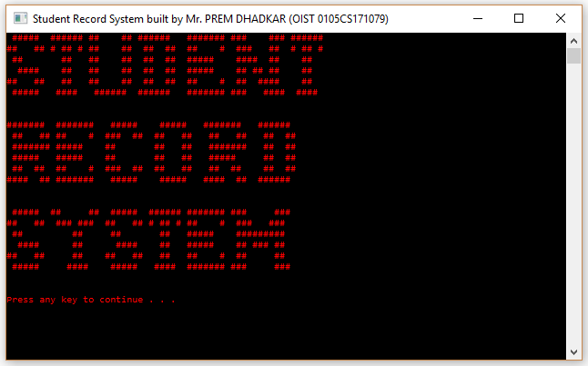
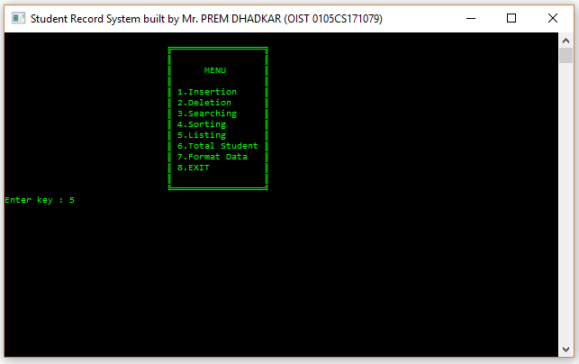
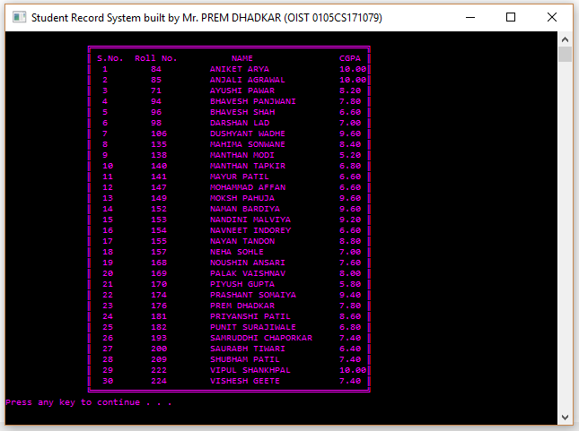
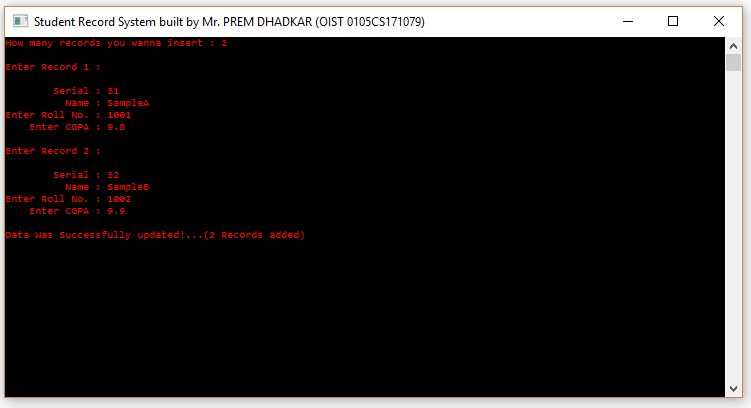
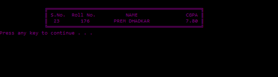
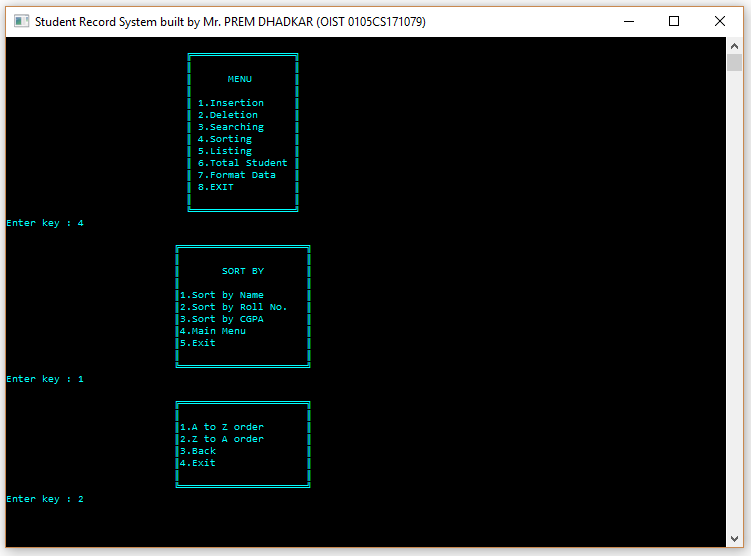
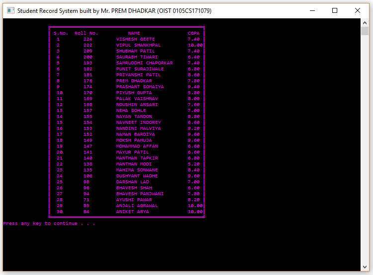
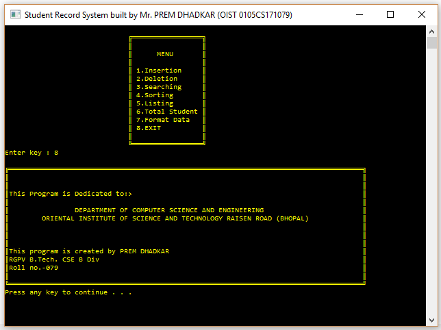

StudentMGMT
This is a console based application. For demonstrating ussage of file system and sorting-searching algorithms using C language.
Prem Dhadkar developed this application when he was in 3rd semester of his B.tech carrer.
1. Welcome Screen

2. Dashboard

3. Reading data from file

4. writing data into file

5. searching record

6. sorting data


7. The Bye-Bye screen 👋
